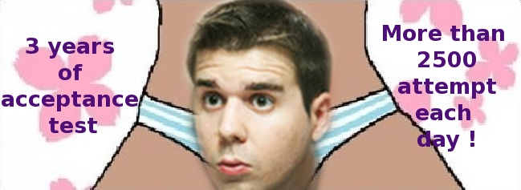

Vendredi midi, l'École du Tech Lead

Jean-Yves nous fera un ReXP sur BMA (celui de CA-CIB, pas le moche... )

Pour comprendre l'image... tu dois connaitre JYR et 9gag...
Un beau feedback terrain sur la maintenabilité des tests de recettes automatisés et de nombreuses bonnes/mauvaises pratiques identifiées.
- Quid de la couverture des tests Fitnesse ?
- Comment lancer les tests le plus fréquemment possible ?
- FitnesseImport ou commit dans le source control pour le versionning ?
- Quels sont les tips & tricks pour ne pas que les MOA s'arrachent les cheveux à écrire des tests ?
- Quels sont les tips & tricks pour ne pas que les MOE s'arrachent les cheveux à écrire des fixtures ?
Toutes ces question trouveront leur réponse demain à l'école du tech lead.
N'oubliez pas !
- When : Demain 12h3O
- What : Le ReXP sur 3 ans d'ATDD by JYR
- Where : Salle Nouvel
|
NDN | FME | GDU | L'École du Tech-Lead OCTO | $date.get('MMMM yyyy') |